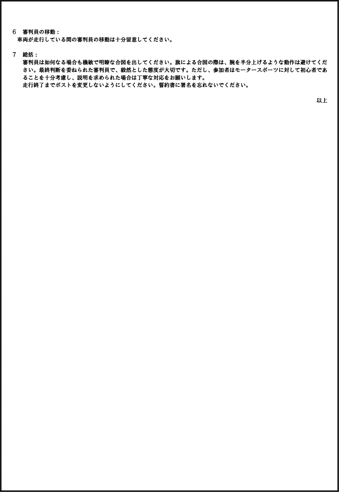

オートテスト オーガナイザーガイドライン
JAF の公式サイトではありません。JAF が公開する PDF を自動変換した非公式の検索用アーカイブです。記載内容は必ず JAF の原本 PDF で出典をご確認ください。 検索と AI 質問つきのビューアで開く
P.1オートテスト
２０２４年１２月１９日＜Ver.５＞
オーガナイザーガイドライン
下線部：追加および修正箇所
オートテストの目的
オートテストは、これまでモータースポーツに馴染みの無い方々を主な対象として、普段街乗りに使用している自家用車を使って、しかも特別な装備を必要とすることなく気軽に参加出来る、「モータースポーツへの入り口」と位置付けられる競技(イベント)です。タイムは計りますが、安全対策を徹底したルールの下で、参加者の方々が適度な緊張感を持って運転するという非日常の体験を通して、モータースポーツならではの楽しさを体感して頂くことこそが本来の狙いです。タイムを追い求めるのではなく、運転の正確さを必要とすることで、自動車運転技術の向上と日常の安全運転に貢献すると共に参加することで国内Ｂライセンスの取得も可能とし、モータースポーツ人口の拡大の役割も担っています。
ガイドラインの趣旨
本ガイドの目的は、オートテストの開催を計画している、または開催するオーガナイザーを支援することにあります。掲示している指針を参考とすることで、参加者、オフィシャルおよび観客がモータースポーツへの興味を深め楽しんで頂く一助として活用してください。参加し易い環境作りの観点から、参加料についても、家族や友人同士で観光施設、テーマパークやアミューズメントパークに行く際に支払う金額を参考に、参加料の高さを理由に参加を見送ることがないように配慮してください。本ガイドは、開催前、開催当日および終了後の作業手順等について以下の項目ごとに説明しています。１ 開催前（１）募集について（２）競技会特別規則書（３）連絡事項（４）コース設定（５）保険（６）救急に関すること２ 開催当日（１）案内～受付まで（２）ブリーフィング（３）オートテスト（４）車両チェック（５）コース審判員（６）競技会審査委員会（７）計時（８）Ｂライセンスの受付（９）表彰式３ 終了後（１）参加者からのアンケートの 取得（２）次回に向けたオフィシャルの意識合わせ
１ 開催前
（１）募集について
① 地元のＪＡＦ支部と連携して開催広報、募集を行ってください。② ライセンス保有クラスを設けることも可とします。③ 女性・シニア割引・学生割引を検討して、だれでも参加できることを示し、若年層の呼び込みをしてください。④ 走行後、Ｂライセンスが申請できることを事前に伝えてください。
P.2（２）競技会特別規則書
国内競技規則４－８に基づく事項を記載して頂くことになりますが、参加者にとって分かり易い内容で、且つ丁寧な表記とすることに配慮してください。① 参加台数、参加者の経験の有無および参加車両のさまざまなボディタイプに配慮し、複数のクラスを設定することを検討してください。② ミスコースを定義することは、参加者と審判員が共通の認識を持つことになり、ミスコースの疑義を生じさせないためにも具体的に記載することを検討してください。③ オーガナイザーは、遅延エントリーとは反対に早期エントリーについての特典等を考慮してください。④ JAF 会員・非会員、あるいは事前申し込みか否かを考慮した参加料金を設定するようにしてください。⑤ 規則書、参加受理通知等の参加者との連絡手段は、 E メール等の電子媒体を用いることを推奨します。
なお、参加登録申し込みは、国内競技規則４－１７に基づき、必要とされる参加料が添付され、定められた期間内に到着ことが条件となることに留意してください。（３）連絡事項
① 参加者が開催地に迷わず行くことが出来るよう、参照地図に加えて、簡単明瞭な道順が示されることが推奨されます。② オートテスト開催会場に使用可能な簡易トイレ（男女別）を設置することを強く推奨されます。また、会場内で参加者への飲食物販売･提供について、開催場所周辺の参加者が利用可能なトイレやコンビニエンスストア等の施設を示すことを推奨します。③ オートテスト当日等に参加者に問題が発生した場合、その参加者がオーガナイザーと連絡が取れるよう、オーガナイザー
（担当者）の１つまたは２つ以上の携帯電話番号を提示することが推奨されます。④ 設定予定コース図は、オートテスト開催日前にＨＰ等で全参加者に提示されることを推奨します。（４）コース設定
① 参加者の経験や参加車両の車種等を考慮して、以下の点に配慮してコースを設定してください。
・参加車両の変速形式（ ＡＴ、ＣＶＴ、ＭＴ等）を考慮した上で、瞬間最高速度は４０ｋｍ/ｈ以下となるコースを設定してください。・特に未経験者や初心者を対象とした場合は、走行タイムが平均４０秒程度となるコース設定することを推奨します。・コースは大型の乗用車にも十分余裕のある設定とし、駐車ブレーキなどを使用せずに運転出来る設定とします。
また、大きな車両のクラスを設ける場合は、３６０度ターンや１８０度ターンなどの過度な技術を避ける単純化されたコースを設定することが推奨されます。 ・車両の転倒を防止するため参加車種に合わせたコース設定としてください。３６０度ターンや１８０度ターンで転倒を避けるため、事前に減速をさせるレイアウトとしてください。特に運転席側が外側に来るタイトコーナーは（例：右ハンドル車の場合は左コーナー）、助手席側が浮きやすく転倒する可能性がある為、十分安全に配慮した設定をお願いします。・スタート後、最大でも５０ｍ毎にマーカー（パイロン等）を設置して方向転換を行うレイアウトとしてください。また、フィニッシュラインの手前２５ｍ以内にマーカー（パイロン等）を設置して方向転換等を行うレイアウトとし、勾配（下り傾斜）部分にフィニッシュを設定することは禁止します。また、ゴール後は安全を考慮し「一旦停止」を義務付けます。・マーカー（パイロン等）は、参加者が明確に認識出来るように配慮してください。・マーカー（パイロン等）は、接触による移動等を考慮し、元の位置に正確に戻せるよう、「マーキング」をしてください。・マーカー（パイロン等）を進行方向に倒し誘導することもミスコースを防ぐ１つの方法です。・車速を抑えることを目的に、マーカー（パイロン等）とマーカー（パイロン等）の間隔およびゲートの間隔は、安全に配慮したものとしてください。・「ガレージ」は最低６．０ｍの長さを有し、幅は３．０ｍを目安としてください。② ミスコースをしない、分かりやすい（簡単な）コースの設定および対策をしてください。対策例）・パイロンに目印を付ける。・歩行によるコースの下見が出来るようコースオープンの時間を設ける。・可能なかぎり慣熟走行を行う。・インストラクターによる試走を行う（参加者の無理な運転に繋がらないように配慮する）。
P.3③ 事故防止のため、以下の設定を行ってください。
・スピードを抑制するため、コーナー等の外側には規制パイロン（または規制線）を設置してください。・観衆および関係者の安全を確保するため、会場内には立ち入りが可能なエリア・不可能なエリアを明確に指定してくださ
い。・公認コース、それ以外の会場での開催を問わず、安全には十分留意してください。（５）保険
① 観衆および競技役員に対する保険（施設賠償保険等も含む）は、クローズド格式で開催する場合も付保することを必須
とします。② 参加者の保険加入は参加者の自己責任とし、加入は任意としますが、その旨を事前にお知らせください。③ 事故の際、自動車保険（任意保険）は適用とならない旨を事前に参加者へお知らせください。（６）救急に関すること ① オーガナイザーは最寄りの病院を確認しておくこと。 ② 救急時の体制について事前に打ち合わせておくこと。
２ 開催当日
（１）案内～受付まで
① 案内
・会場まで迷わないような案内をしてください。② 受付
・参加者に与える印象に影響するので、円滑な受付作業ができるようにしてください。・参加条件になっているため、運転免許証の確認をしてください。③ 参加者への事前案内には以下の点を含めてください。 ・トイレ
・喫煙場所・自動販売機の有無・昼食について・子ども、ペットについての注意喚起・同伴者の休憩場所の案内（２）ブリーフィング ① オートテスト開始前に参加者及び競技役員、主催関係者を含めたブリーフィング（ミーティング）を行って下さい。 ・競技役員の紹介、審査委員会の紹介、イベント当日のタイムスケジュール、オートテストのルール（２本走行して良い方のタイムで順位をつける等、基本的なルールから、サイドターン不可やゴール後の一旦停止まで）、ペナルティ（パイロン移動やミスコース判定、車庫入れ判定等）、ダブルエントリーの乗り換え場所、観戦場所等の説明を行って下さい。 ・イベントで使用する旗の説明を行って下さい。 スタート：日章旗等パイロン移動・転倒：黄旗ミスコース：黒旗 緊急停止：赤旗 コースクリア：緑旗 ② その他 下記の説明も実施してください。 ・トイレの場所
・喫煙場所の場所・自動販売機の有無・昼食について（場所、時間含む）・子ども、ペットについての注意喚起・同伴者の休憩場所の案内・その他（３）オートテスト
① オートテストはモータースポーツを初めて体験する方々を主な対象に、速さだけではなく運転の正確さも要素に入れて楽しんでいただく競技（イベント）であるという点を十分考慮してください。② 参加車両の搭乗者側の窓およびサンルーフを全閉として走行することを 指示してください。③ オートテストの模範走行は義務ではありません。また、参加者の無理な運転に繋がらないように配慮してください。
P.4④ 花壇、表示板あるいは芝を保護したい場合、事前の策としてパイロンを設置することを推奨します。
縁石に関して、危険防止の観点からパイロン等で規制して 全ての審判員およびドライバーに周知徹底してください。 ⑤ スタートライン手前で待機する場合、前後の車両の間隔は十分開けるように参加者に指示をしてください。
⑥ コース上の走行車両は、常に１台となるようにしてください。⑦ 同乗者については、以下の通りとしてください。
・人数は１名として、助手席に同乗させてください。・身長は１５０ｃｍ以上としてください。・同乗者が２０歳未満の場合、親または保護者から同乗に関する同意書を取得してください。⑧ オートテスト開催中は、実況を入れると会場内の雰囲気が盛り上がり効果的です。（４）車両チェック
① 走行前に車両をチェックする区間を設定することを推奨します。
例えば、それがパイロンで囲われた「ボックス」で設定することも1 つの方法です。② 車両チェック用のチェックシートを準備することを推奨します。 例）
・室内の荷物（特にダッシュボード上の小物、ペットボトルや空き缶等の有無）・タイヤの空気圧、パンク等の有無・オイル漏れ・トランク内、後部座席の荷物の状況・ゼッケンの貼り付け状態（５）コース審判員
① 参加者が安全かつ正確に走行しているかを判定する審判員を任命してください。② 審判員は参加者に対し、安全を考慮し目立つ服装とすることを推奨します。③ 審判員は各参加者の走行判定に責任を負い、ミスコース等全てのペナルティを判定することと記録する任務を遂行することによって、参加者とは異なる形でモータースポーツに携わる楽しさがあることを体験させてください。④ 審判員が注意を怠ることにならないよう、役務を遂行させるために、各担当審判員に必要な緑旗、黄旗、赤旗および黒旗
を準備し、ペナルティが発生したか否かをその旗によって示させ、競技長がそれを把握するまで高く持ち上げられることを推奨します。⑤ 『審判員に対する書面によるブリーフィングのポイント』を参考としてください。（６）競技会審査委員会
① 競技会審査委員会は、国内競技規則１０－１０に規定する権限を有すると共に、コースの安全性について配慮し万全の
事前確認を行ってください。 ② オフィシャルの安全確保のため、配置および立ち位置について確認を行ってください。（７）計時
① 重要：
・走行タイムおよびペナルティポイントが順位要素となるため、タイム計測は特に慎重に行われなければなりません。計測手順や装置に不正確さがある場合、不公平な結果を導くことになります。・可能な限り経験豊富な計測担当者を走行タイムの計測に従事させてください。全体の計測作業に過ちが起きないよう、
その計測状況を監督するために１名の計時委員長を置くことが推奨されます。計時作業は、手動式または自動式のストップウォッチで行われ、常に経験豊富なオフィシャルに任せてください。② 計時機器：
・計測は、手動式のストップウォッチ、光電管などで 行うことが出来ます。・ストップウォッチの精度は、信頼性があり状態の良いものを用意してください。少なくとも１つの予備のストップウォッ チを準備しておくことが推奨されます。イベントを通して同じオフィシャルが同じストップウォッチを常に使用することを推奨します。・手動式のストップウォッチは、０.０１秒まで計測可能な正確なものを使用してください。フィニッシュ後、審判員は計
測結果を記録してください。 ③ スタート：
・ランニングスタート（スタート合図を受け車両を発進後、スタートラインを通過する瞬間から計時が開始される）を採用してください。・スタートラインでは一貫した手順をとることが正確な計測のために必要です。
まずは正確なスタート位置に車両を合わせることが大切で、スタート審判員は各車に不公平が生じないようスタート位置とバンパー先端部を合わせて待機させ、さらに車両がスタートする前にスタート位置から動くことの無いことを確認してください。・機械的な方法で作動する、時計と連動したシグナル式のスタートを行うことも出来ます。④ フィニッシュ：
P.5・フィニッシュは常に車両の前部がフィニッシュラインを通過しなければならず、手動式のストップウォッチで計測の場合は、計測オフィシャルがこれを確認するために適切な位置についてください。・フィニッシュ時には、以下の場合にペナルティが課されます。（a）フライングフィニッシュで計測を受けた後に一旦停止ラインを超えた場合または通過した場合。（b）フィニッシュラインに跨って止まることが義務付けられているのにそのラインに跨って止まらなかった場合。
※但し、この「ライン跨ぎ」と呼ばれる規則を設定する時は、参加者に周知徹底させなければなりません。 ⑤ 結果：
・リザルトボードを設置することにより、オートテスト開催中に随時最新の結果を表示することを推奨します。 ・走行結果の掲示は、なるべく各クラスが終了する毎にボードに掲示されることを推奨します。出走しなかった人がいた場合、結果に明記してください。 ・走行結果は、全ての参加者の氏名、ゼッケン番号、車名、型式、計測タイム、ペナルティとその内容、ペナルティポイントを加算したリザルトタイムを示してください。（８）国内Ｂライセンスの申請
① 申請受付：
会場で国内Ｂライセンスの申請受付ができるように準備してください。ブリーフィングやオートテスト走行後に国内Ｂライセンス申請について適宜声がけしてください。（９）表彰式
① オートテスト終了後は、表彰式を実施して上位者等の表彰を行うことも可としますが、合わせて成績上位者だけが満足
するイベントにならないように工夫してください。② 主催者から総評として、参加のお礼、安全運転に繋がること、次回の案内などを含めてください。
３ 終了後
（１）参加者からのアンケートの取得
① オートテスト終了後は、参加者にアンケート等をとり、次回のオートテストを開催する際の改善の参考にしてください。② アンケート結果は関係者で共有するようにしてください。氏名等を記載する場合は、取り扱いに注意をお願いします。（２）次回に向けたオフィシャルの意識合わせ
① その場限りにならないよう問題点を共有し次回の開催につなげてください。
審判員に対する書面によるブリーフィングのポイント（参考）
１ 「コース上」審判員：
参加者の走行を確認することが役割です。・パイロンを移動、転倒していないこと、・停止ラインを超えて停止していないこと、・正しいルートで走行完了していること。・停止指定場所で完全停止していること。２ 正しいルート：
正しい方向（前進あるいは後退）および順序で、走行すること意味します。３ パイロン移動：
「移動」あるいは「転倒」はペナルティ対象とします。・１０秒ペナルティ（特別規則書によって別途定めることができます ）。４ ライン跨ぎ：
「タイヤ接地面がラインを通過しなければならない」と定義します。前進の場合は前輪２本、後退の場合は後輪２本がラインを通過する必要があります。・１０秒ペナルティ（特別規則書に定めがあれば５秒）。
重要：疑義がある場合は、ドライバーの利益となるように判断してください。５ ペナルティ合図：
ペナルティの判定を審判員が判断した場合は、以下の合図をしてください。◆黄旗 ；；（真横または真上に静止して提示 パイロン移動、転倒。◆黒旗 ミスコース。◆赤旗 危険あり。直ちに停止せよ。◆緑旗 コースクリア。参加者がオートテスト中および完了までにペナルティがあった場合、競技長が確認するまで旗で示してください。
